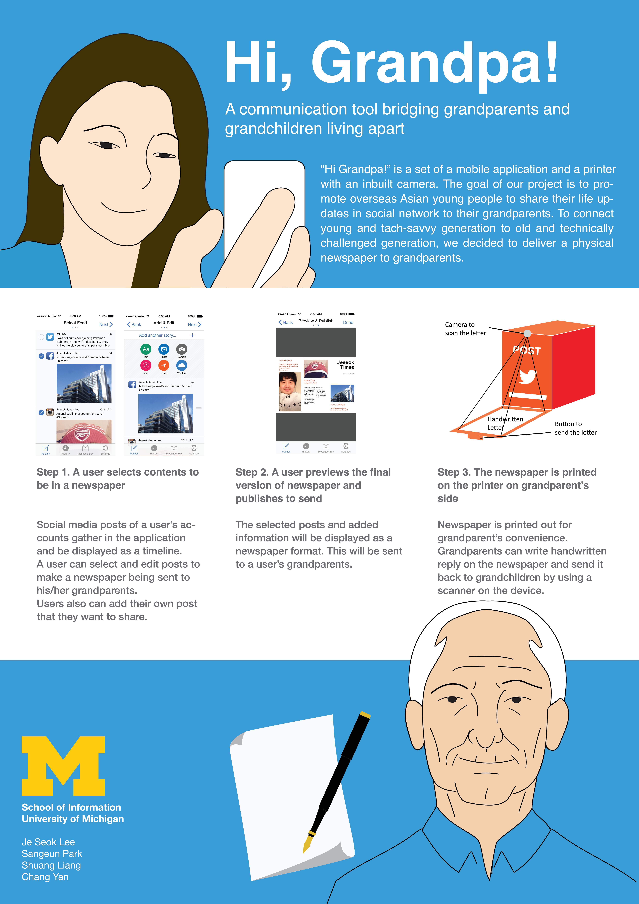
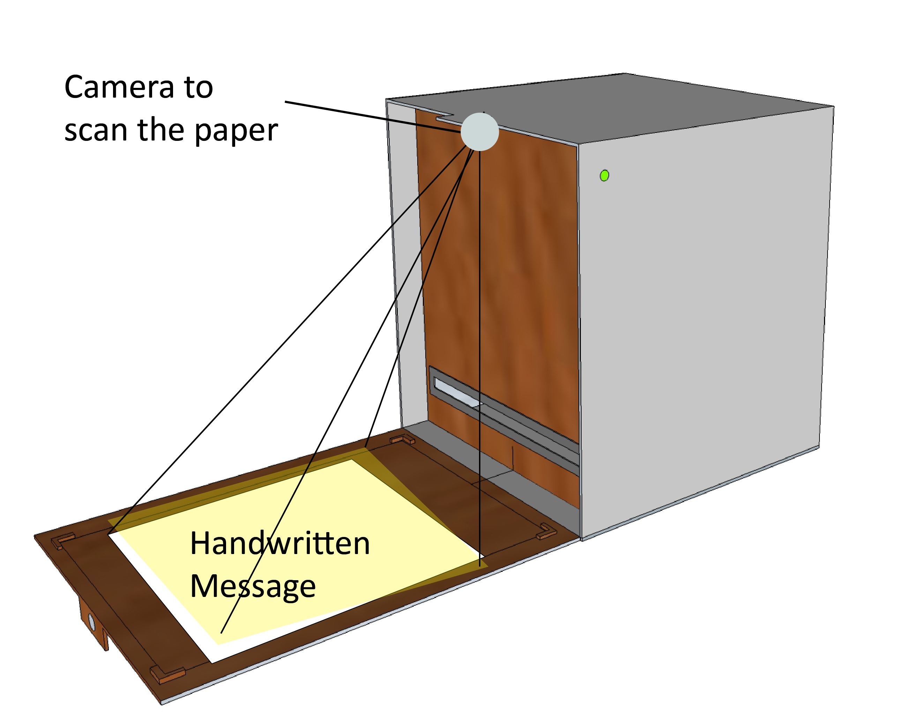
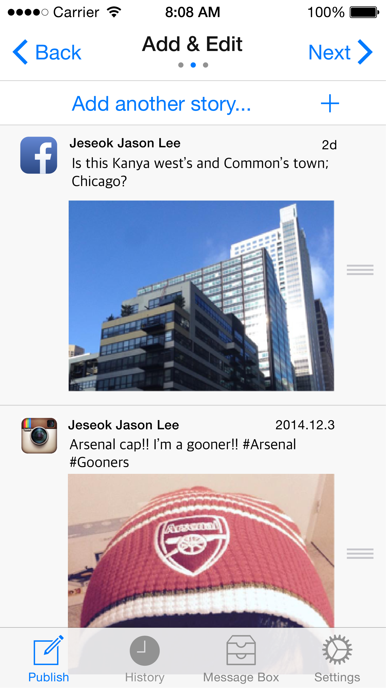
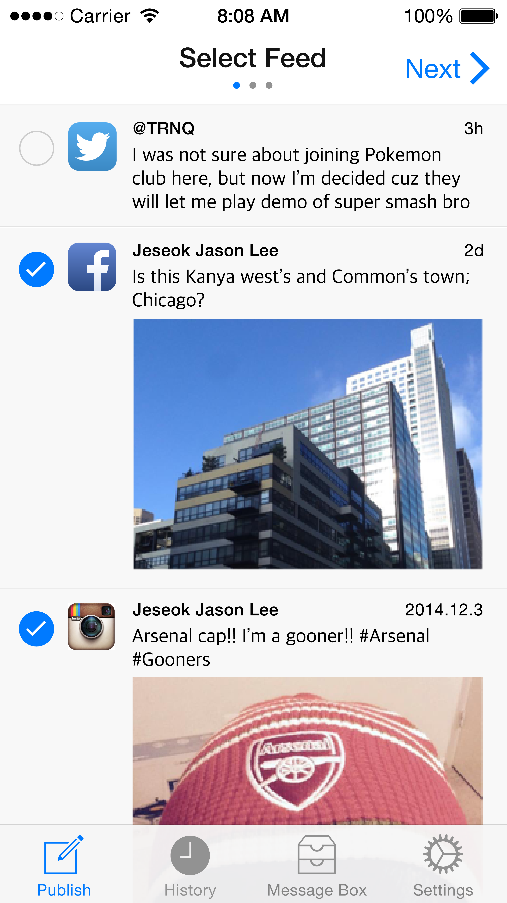
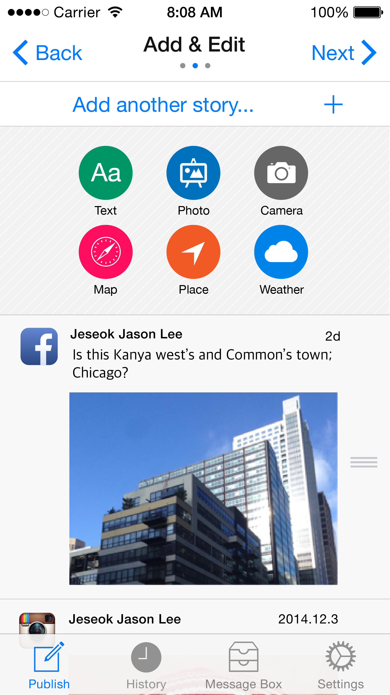
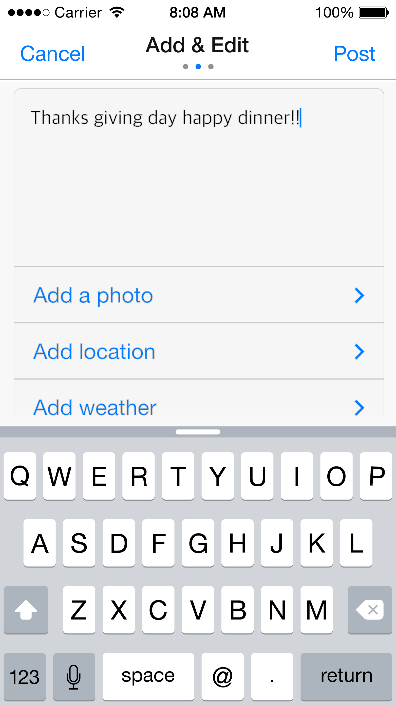
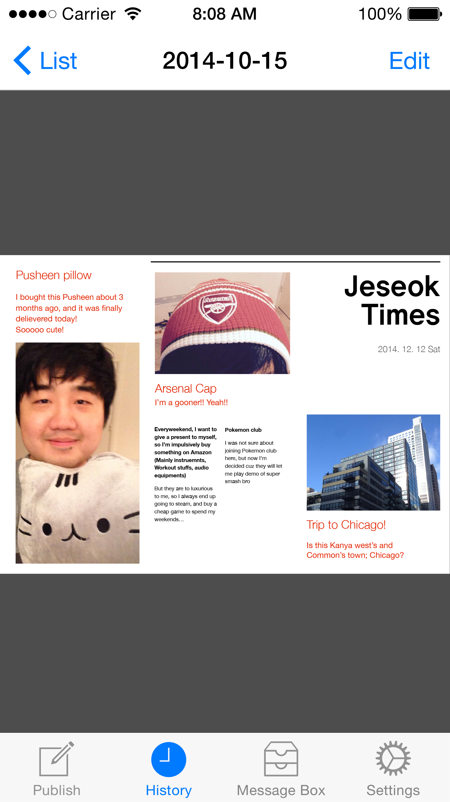
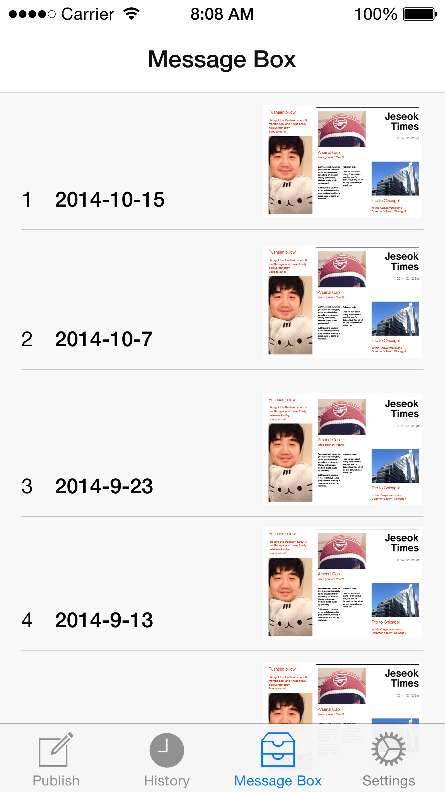
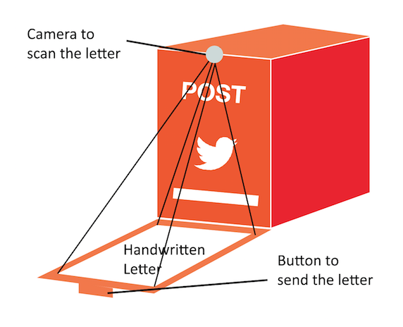

Hi Grandpa!: A communication Tool Connecting Grandparents and Grandchildren Living Apart
Research Project
Copyright is held by the owner/author(s).
MobileHCI '15 Proceeding, August 25-28, 2015, Copenhagen, Denmark
ACM 978-1-4503-3653-6/15/08. Available at
http://dx.doi.org/10.1145/2786567.2793687
Communication between Asian grandparents and their overseas grandchildren has been
impeded by an imbalance in technology adoption. We used a combined method of user
research, survey, and user-centered design to address this problem. Considering user
experience of two different end-users in this interaction process, we designed a
digital inbox connected with a mobile application as a final design. We intended to
increase communication frequency between family members, and also to cross between
traditional media and current technology, as well as cultures.

Click for large image. Poster presented at MobileHCI 2015
Created by Sangeun Park and Jeseok Lee. Adobe Illustrator.
As preliminary research, we tried to figure out several questions based on our
target group—overseas Asian students and young employees.
- How does our target user group communicate with their grandparents?
- In what type of media (e.g. text, picture, video, audio call) do they want
to share when communicating?
- What content (e.g. private story, positive experience, personal concern)
do they want to share with their grandparents?
- Why do they communicate in this way?
We found that their communication was significantly decreased after they had been
abroad. Because grandparents were not able to use social network or video talk
independently, grandchildren had to schedule a special time considering heavy course
load and time lag (only 35.7% of grandparents can use smartphones when they
communicate with grandchildren).
Grandchildren tended to convey selected information to their grandparents. They
preferred to share positive information and experiences (66.7% of grandchildren
don’t want to say “Life in the US is going in an unexpected direction, totally
out of control. I feel I’ve lost my direction. What can I do?” and 94.4% would not
tell them if they “drank until dawn last night,” while 76.7% of them would tell if
they received a full academic scholarship. What grandchildren wanted to hear from
grandparents would be comparatively limited and mostly health related: 90% said they
would be inclined to ask about grandparent’s health condition, while only 56.7% were
curious about their daily life, hobbies and activities and 53.3% were interested in
their life experiences.
Based on these results, we designed a survey and gathered 30 samples from the target
group, including grandchildren from China, Korea and Taiwan who were studying abroad
in the U.S. (age range of 18~29). We wanted to reassure that results we found in
contextual inquiry were replicable in entire target groups and found device usage
situations for both grandchildren and grandparents. Findings influencing our final
design are:
- There is no convenient way for grandchildren to share pictures with grandparents
when they are abroad: 76.7% of grandchildren are using audio calls for communication
with grandparents, and only 3.3% were using social networking services, and they would
like to share this visual information even more than mere stories (93.1% of grandchildren
answered that they wanted to share “pictures of thanksgiving dinner with friends” and
89.7% of them want to share “pictures of travel during term break” while 80% of them
would tell them that “I visited a sightseeing place during term break.”).
- Grandparents have difficulty learning high-tech devices, such as smartphones and
tablets. Interviewee A said, “it is useless to learn such devices at my age.”
However, those devices are the main channel that grandchildren use when
communicating in their daily lives.
- Personal choice of information as communication content varies.
Since this is a tool to connect two different side of grandparents and children,
we had to design and test at the both ends.
Grandparent Part
We had to conduct intensive user research on the user group since the user group
includes elderlies who are not accustomed to newer technology. We recruited 4 elderly
people to conduct user tests on the device used in the grandparents’ part. We built a
mockup to test usability in as similar of environment as possible. The mockup was
given to our participants, and they were asked to freely interact with it. By
monitoring their interaction with the mockup, we could decide the form and function
of our device. It will be discussed more in the final design part.

3D Modelling of Postbox Prototype
Created by Chang Yan. 3D MAX.
Grandchildren’s part
With our low-fidelity prototype, we conducted 5 user tests on the grandchildren’s part.
Based on a paper prototype test using a think-aloud method, we could organize the flow
of the application. In follow-up interviews, we could find users’ needs to share not only
their post on SNS but also create meta-data that they can provide. Moreover, users felt
that their expression was limited because specific emotions they wanted to share with
their grandparents were not uploaded on their timeline. We added features to upload data,
such as locations, maps, and weather. Also, we let users write their own text messages on
their newspaper.



1. Retrieve posts from your social media account
2. Check posts you want to share
3. You can put additional media on your journal



4. You can simply put text or other data on journal
5. Check and finalize journal
6. History of past journals
All created by Jeseok Lee. Adobe Illustrator.
Final Design
Grandparents’ Part

3D Modelling of Postbox Prototype
Created by Jeseok Lee. Adobe Illustrator.
For better understanding and convenience, it should require minimum operation when
interacting. We thought of adopting a scanner on our device, but it turned out to be
hard for users to operate the device. Instead, a camera is put on the top of the device
to capture the image of the reply paper.
The second thing we considered is that its maintenance should be easy for the elderly.
We had to reduce difficulty of maintenance in our device to make it user-friendly.
The paper tray on the top is designed to be a place to put papers, and its vertical
design lets users put in papers easily
Grandchildren’s Part
The application is comprised of four menus - Publish, History, Message Box, and Settings.
Publish menu includes Selecting feeds, Adding and Editing posts, and Publishing the paper.
In adding a post menu, users can select the type of data they want to input - plain text,
picture, camera, map, location information, and weather. Users can review their newspaper
in the History section. After they receive a reply from their grandparents, it can be found
in the Message Box section. In settings, users can figure out which SNS accounts should be
registered to the application, and decide a destination for their newspaper
Benefits and conclusion
Our design can help increase communication quality and frequency between grandparents and
grandchildren who are in different countries. With the new device, grandparents can have a
personal perspective on the culture and life of another country through the lives of their
grandchildren. By sharing life stories with their grandparents, international students can
strengthen their emotional connection with their grandparents. The two generations and two
cultural backgrounds are connected in this process, and most importantly, the “voice” of
international elderly people can be heard to the other side of the world.
Our design provides a two-way sharing between grandchildren and grandparents and finds a
way for grandparents to share their opinions and stories using a device they are
comfortable with. Without actually learning computers or smartphones, the communication
device we developed for elderly people contains respect for their traditional living
habits, and at the same time, combines technology and tradition.
{kind=link}